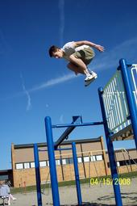

About Me
Hello everyone. This is the portfolio and game review site of Scott Compau, a Media Arts and Technology Senior at Michigan State University. A few of my interests are parkour, bowling, and video games. I also enjoy playing my bass guitar and writing music.
One of the things that defined me as a person in High school was parkour. Parkour is an athletic activity in which one person flows through environments as efficiently as possible. My interest in parkour started as it was becoming popular and I had to face public criticism from my confused peers. I wasn't bothered though. In fact, I was proud to be a "pioneer" in such a recent genre of expression. I feel that way about most of the things I do. Whether or not people care to understand, I will always be me.

I am also proud of my improvisational and musical career. I am always willing to create new songs, perform them on drums, bass guitar, or with my voice. Playing and creating music has always been an outlet of creativity of mine and it helps to take a listen to some old songs to see how much I have changed. I am brave enough to stand on stages both large and small and belt out lyrics that no one in the crowd knows. It's an exhilarating experience that not everyone has the opportunity to do.